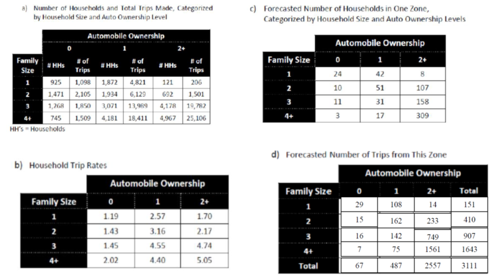

Lecture 3 - Trip Generation
CIVE 461/861: Urban Transportation Planning
We can examine trip generation in several ways…
Total number of trips generated in a TAZ based on zone properties: population, employment, number of cars, etc. (method: regression)
Trip frequency choice by households (method: discrete choice)
Academic Vs. Practitioner Considerations
- Practitioner struggle deciding between a theoretically sound but difficult to implement set of models & a more pragmatic modelling approach reflecting the limitations of the data, time, & resources available for a study
- Models are too complex
- Implies that heuristic approaches, rules of thumb, & ad hoc procedures are easier to understand & therefore preferable
Planning & Monitoring with the Help of Models
Classic 4-Step Travel Model

Classic 4-Step Travel Model
- Trip generation, 2) Trip distribution, 3) Modal split, & 4) Traffic assignment
Generally recognized that travel decisions are not actually taken in this type of sequence
Model sequencing depends on the form of the utility function assumed to govern all these travel choices
Four-stage model is seen as concentrating attention on only a limited range of travellers’ responses
Classic 4-Step Travel Model
- Current thinking requires analysis of a wider range of responses to transport problems & schemes
- For example, when faced with increased congestion a trip maker can respond with a range of simple changes to:
- Route followed to avoid congestion or take advantage of new links - choice of parking place or combination of services in the case of public transport
- Mode used to get to the destination
- Departure time to avoid the most congested part of the peak
- Trip destination to a less congested area
- Trip frequency by undertaking the trip on another day, perhaps combining it with other activities
Trip Definitions
- Home-Based (HB) Trip: A trip which either starts or ends at the home
- Home-based work
- Home-based grade school
- Home-based university
- Home-based shopping
- Home-based other
- Non-Home-Based (NHB) Trip: A trip which neither starts nor ends at the home
- Trip production: The home end of a HB trip or origin of a NHB trip
- Trip attraction: The non-home end of a HB trip or the destination of a NHB trip
Trip Production & Attraction
Trip Production & Attraction
Origin/Destination Vs. Production/Attraction
- Production & attraction approach works fine when dealing with 24-hour work trips
- Lose directionality when dealing with peak-period flows
- Typically use origin/destination approach
Trip Purpose
- For HB trips:
- Travel to work
- Travel to school or college (education trips)
- Shopping trips
- Social & recreational trips
- Escort trips (to accompany or collect someone else)
- Other trips (healthcare & personal business)
- First two are usually considered compulsory (mandatory) trips & we build skeleton schedules around them
- Other usually considered discretionary (optional) trips
Factors Affecting Trip Generation
- Since trip generation performed before distribution & mode split, usually do not use travel times, costs, etc.
Personal trip productions
- Income
- Car ownership
- Family size
- Household structure
- Value of land
- Residential density
- Accessibility
- First 4 considered in most household trip generation models
- Value of land & residential density often considered in zonal studies
- Accessibility rarely included in models but makes trip generation elastic (responsive) to changes in transport system
Factors Affecting Trip Generation
Personal trip attractions
- Floorspace available for industrial, commercial, & other services
- Zonal employment
Freight trip production & attraction
Number of employees
Number of sales
Roofed area of firm
Total area of firm
What about type of firm? Accessibility? Curiously, few applications in freight models despite it seeming logical that different products have different transport requirements
Trip Generation Aggregation
- Temporal aggregation: hourly, peak/off-peak, daily, weekly
- Spatial aggregation:
- Persons: by income, driver’s license, vehicle ownership, occupation type, household size, etc.
- Households: by income, vehicle ownership, household size, number of workers, with/without children
- Zones: by location (e.g., downtown, suburb), major trip generator (e.g., hospital, stadium)
- Most operational models use either zones or households. Why?
Trip Generation Approaches
Three major operational approaches
- Trip rate models
- Cross-classification models
- Regression models
Trip Rate Models
- Computed from observed data by simply dividing number of trips by selected explanatory variable or population
- Home-to-work trips for retail employees = Total observed trips by retail employees / Total retail employment
- Trip rates can be geographically stratified (i.e., different rates used for different areas of the city) & may combine multiple factors
- Total shopping trips=
A1 ×Population in Downtown Area
+ A2×Population in Inner Suburbs
+ A3×Population in Outer Suburbs
Trip Rate Models
- Constant trip generation rate is estimated from observed data
- Forecasts can be done
- Assuming trip generation rate by category is fixed
- Trips attracted to a shopping mall = \(A_s \times {MallFloorArea}\)
- Trips generated by a zone = \(\sum_k A_k \times HH With Cars \text{ where k} = 0, 1, 2, 3, etc.\)
- Assuming overall trip generation rate is fixed
- Trips generated in a zone = \(t_i\)
- Trips generated in the future \(T_i = t_i \times PopulationGrowthRate\)
- Assuming trip generation rate by category is fixed
Cross-Classification Models
- Classify households (or persons) by one or more variables - often household size & number of vehicles
- Assume trip rates are relatively constant within each group
- Compute average trip rate for each group
- Zonal trips = sum of trips generated by all groups found in the zone
- Note: trip rate model is a cross-classification model by trip type not trip maker
Cross-Classification Models
Linear Regression Models
- Use regression to estimate “best fit” linear regression between # of trips & one or more explanatory variables \[T=1.229+1.379V\]
- Where \(T\) is daily trip productions per household for all purposes & \(V\) is the # of vehicles per household \[A=61.4+0.93E\]
- Where \(A\) is daily work trip attractions for a given zone & \(E\) is total zonal employment
Parameter Signs & Theoretical Expectations
- Model specification should “make sense” from behavioral & theoretical perspectives
- Variables included should have a causal influence on the dependent variable
- Parameters should have expected signs (+ or -)
- Parameters should have reasonable magnitudes
Parameter Signs & Theoretical Expecations
- Do these parameter signs make sense? \[Daily HH Trips= 3 Persons In HH − 0.5 HH Vehicles\]
- No: We expect trip making to increase with # of vehicles
- Does this parameter magnitude make sense? \[Daily HH Work Trips=0.2 HH Workers\]
- No: We expect each worker to make approx. 2 trips per day
- Does it make sense to include No. of HH workers in the model? \[Daily HH School Trips=1+0.2 HH Workers\]
- No: There’s no logical/causal relationship between no. of workers & school trips
Or Could The School Model Make Sense?…
International Institute for Applied Systems Analysis in Austria:
- Women with no schooling - 4.5 children
- Women with 2-3 years of primary school – 3 children
- Women who complete one or two years of secondary school - 1.9 children (replacement rate is 2.1 children)
- With one or two years of college, the average childbearing rate falls even further, to 1.7
- When women enter the workforce, start businesses, inherit assets, & otherwise interact with men on an equal footing, children per household fades even more dramatically
Zonal-Based Multiple Regression
Some important considerations
- Zonal models can explain variation between zones
- For this reason, only successful if inter-zonal variations reflect real reasons for trip variation
- Necessary that zones are homogeneous in socioeconomic composition & represent a wide range of conditions
- Major problem is that main variation in person trips is intra-zonal
- Role of intercept: One would expect estimated regression line to pass through zero but large intercepts are common. Why?
- Null zones: No information about certain dependent variables (e.g., no. HB trips in a non-residential zone). These zones must be excluded from analysis
Zonal-Based Multiple Regression
Some important considerations cont…
- Zonal totals vs. zonal means: when formulating model, analyst has choice between aggregate or total variables, such as trips per zone or cars per zone vs. rates, such as trips per household or cars per household in the zone
- Important difference: \[Y_i=\beta_0+\beta_1 X_{1i}+\beta_2 X_{2i}+‚Ķ+\beta_k X_{ùëòùëñ}+E_ùëñ \text{ (total trip model)}\] \[ùë¶_i=\beta_0+\beta_1 x_1i+\beta_2 x_2i+‚Ķ+\beta_k x_{ùëòùëñ}+e_i \text{ (trip rate model)}\]
- Where \(y_i=Y_i/H_i\), \(x_i=X_i/H_i\), & \(e_ùëñ=E_i/H_i\)
Zonal-Based Multiple Regression
Even more important considerations…
- Similar equations & parameters have a similar interpretation
- However, unless \(H_i\) is constant across zones, constant variance condition cannot hold for error terms in total trips model
- Aggregate variables reflect size of zone, thus magnitude of error depends on size of zone - heteroskedasticity (variability in variance)
- Using a \(1/H_i\) multiplier normalizes the model & reduces heteroskedasticity because model becomes independent of zone size
- Aggregate variable models often yield higher \(R^2\) but spurious effect from zone size helping to explain total trips
- DO NOT mix rate & aggregate variables in same model
Zonal-Based Multiple Regression
- Even when rates used, zonal regression is conditioned by nature & size of zones (spatial aggregation problem)
- Interzonal variance diminishes with larger zone size
Household-Based Regression
- Intra-zonal variation may be reduced by decreasing zone size but there are two problems
- More expensive models in terms of data collection, calibration, & operation
- Larger sampling errors (regression to mean with larger samples, so small zone means not capturing average person), which is assumed non-existent by multiple linear regression model
- Household used rather than person because we have a hard time incorporating intra-household dynamics (e.g., vehicle availability) - Some advances but still not great
- Can decide on variables in step-wise process but must be careful - May exclude a variable with slightly lower prediction that is easier to forecast
- Opposite approach of including all variables & removing variables can be a better approach
Validity of Linear Regression Assumption
- Regression models are easy to construct & use
- However, underlying assumptions may be wrong
- Linearity
- No correlations between explanatory variables
- Residuals are estimates of error in model obtained from subtracting predicted from observed dependent variable values
- Residual \(e_i = y_{i,observed} – y_{i,predicted}\)
- Residuals should be normally distributed with constant variance – can plot a histogram to check
- Residuals should be uncorrelated with any explanatory variable – can plot residuals vs. explanatory variables
Histogram of Residuals
Residuals Vs. Explanatory Variables
Example
- Three variables are defined \(X\), \(Y\), & \(Z\) where \(X\) & \(Z\) are explanatory variables & \(Y\) is the dependent variable
First Model \(y = aX + b\)
- \(R^2 = 0.506\) means that we are explaining 50.6% of the variance in y with the explanatory variables in the model
Analysis of Residuals Vs. X
- Looks like a constant variance across values of \(X\)…
Analysis of Residuals Vs. Z
- Residuals not constant over different values of \(Z\) (so we should try to include \(Z\) as another explanatory variable)
Second Model \(y = aX bZ + c\)
- \(R^2 = 0.761\) means that we are explaining 76.1% of the variance in \(y\) with the explanatory variables in the model
Analysis of Residuals Vs. X & Z$
- Now residuals don’t change over different values of X or Z!
Dealing With Non-Linear Relationships
Transform the Explanatory Variable (add \(x^2\) term)
Other Transformations
- Log transformation, \(x’ = ln(x)\) if effects starts strong at low x but reaches limiting return with further increases in \(x\) (often used for income variables)
- Dummy variables:
- \(X_1\) = 0 if vehicle ownership = 0 & 1 if vehicle ownership > 0
- \(X_2\) = 1 if married & 0 otherwise
- Variable interactions
- \(X_1\) = age in years \(\times\) income less than $30k
- \(X_2\) = age in years \(\times\) income $30k-$60k
- \(X_3\) = age in years \(\times\) income over $60k
- \(X_4\) = gender (male) \(\times\) have fulltime job
- \(X_5\) = gender (male) \(\times\) have parttime job
Non-Linearity in Trip Generation Variables
- Linear regression assumes each independent variable exerts a linear influence on the dependent variable
- Not easy to detect non-linearity because relationship can appear linear until other variables enter into the model (i.e., it is representing the effect of multiple variables with a linear overall effect)
- Multivariate graphs can be helpful to identify non-linearity
Example
Consider the variables trips per household (\(Y\)), number of workers (\(ùëã_1\)), and number of vehicles (\(ùëã_2\)). Successive steps were performed of a stepwise model estimation. Values (in parenthesis) are t-ratios. In the step 4 model, \(Z_1\) takes the value 1 for households with one car and 0 otherwise and \(Z_2\) takes the value 1 for households with two or more cars and 0 otherwise. We can see that zero car households will have the value 0 for both \(Z_1\) and \(Z_2\). Even without the higher \(R^2\), the step 4 model would be preferred because it clearly demonstrates there is a non-linear effect that‚Äôs ignored by \(ùëã_2\).
Variable Selection & Model Building
- Problem: Choose the set of appropriate explanatory variables from a set of candidate variables - variable selection
- Possible approaches
- Exploring all possible variables - many combinations
- Stepwise regression -> construct a sequence of regression models by adding or removing variables at each step
- Forward selection: add variables to the model one at a time until there are no remaining candidate variables that improve fit
- Backward elimination: begin with all possible variables & remove the least significant variables
- Are there problems with these approaches?
Variable Specification & Forecasting
- Consider variables important for explaining differences in trip-making decisions
- Frequency & data plotting gives idea of variability with respect to different variables
- Specify variables as per relationship
- Continuous
- Ordered
- Discrete
- Variable choice depends on availability of observed information & capacity to forecast
- Statistical significance tests
- Model goodness of fit can be used to identify impact of specific variables
Model Validation
- A good way to validate a model is to compare observed vs. modeled values for some groupings of the data
- Better than comparing totals because biases may cancel in that case (high prediction cancels with low prediction)
- Errors are reasonably low (i.e., less than 30%)
- Large bias could be addressed by adjusting model parameters, but it’s not easy because there are no clear rules
Model Validation - Learning From Machine Learning
- Transportation planning field starting to adopt methods from machine learning field, including for validation
- Leave-one-out (LOO) & k-folds cross-validation to get mean & std. dev.
- Score (R2 for linear regression)
- Mean absolute error (MAE)
Obtaining Zonal Totals
- Simple process for zone-based models because already modeling total trips
- Requires extra step for household-based models – multiplying by number of households
- \(T_i=H_i(0.91+1.44\bar{X}_{1i}+1.07\bar{X}_{2i}\) where \(T_i\) is the total number of HB trips in zone \(i\)
- With dummy variables, we need to know the number of households in each group
- \(T_i=H_i(0.84+1.41X)+0.75H_{1i}+3.14H_{2i}\) where \(H_{1i}\) is the number of one vehicle households & \(H_{2i}\) is the number of two vehicle households in zone \(i\)
Matching Generations & Attractions
Models do not guarantee, by default, that total trips originating in a zone (the origins O_ùëñ) at all zones will equal the total trips attracted (the destinations ùê∑_ùëó)
Following expression may not hold \[\sum_i O_i=\sum_j D_j\]
Generally assumed that trip generation models are better than trip attraction models
Total trips are then \(T=\sum_i O_i\) & a factor applied to trip attraction \[f=T/\sum_j D_j\]
This equality is necessary for the next model step: trip distribution
Growth Factor Modeling
- Growth factor method given by \[T_{i+t}=F_tT_i\]
- Where \(T_i\) is total trips at time \(i\), \(T_{i+t}\) is total trips at time \(i+t\), & \(F_i\) is a growth factor. Determining total current trips is a simple process but forecasting future trips (i.e., \(F_t\)) is a big challenge
- \(F_t\) is related to variables such as population (\(P\)), income (\(I\)), & car ownership (\(C\)) \[F_t = \frac{f(P_t,I_t,c_t)}{f(P_i,I_i,c_i)}\]
Growth Factor Example
Consider a zone with 250 households with vehicles and 250 households without vehicles. Assuming we know the average trip generation rates of each group:
- Vehicle-owning households produce 6.0 trips/day
- Non-vehicle-owning households produce 2.5 trips/day
We can determine the current number of trips as \[T_i = 250 \times 2.5 + 250 \times 6.0 = 2125 \text{ trips/day}\]
Growth Factor Example
Let’s assume that all households in the future have a vehicle. We can then estimate a simple multiplicative growth factor as \[F_t = 1/0.5 = 2.0\] \[T_{i+t} = 2 \times 2125 = 4250 \text{ trips/day}\]
Growth factor methods are crude & generally used in practice for external trips where additional information is not available
Growth Factor Example
- Let us also assume that in the future all households will have a vehicle, but income & population remain unchanged
\[T_i = 6 \times 500 = 3000 \text{ trips/day}\]
- But do we expect non-vehicle households to make this many more trips if income is not changing?
Stability & Updating Trip Generation Model
- Temporal stability: Population/socio-economic structure changes over time & affects trip rates
- Geographic stability: Trip-making patterns vary from place to place
- Updating trip generation models
- If models were developed using old data, it is necessary to update the model for present situation
- Best way to re-estimate trip generation model using present data
- If sufficient data is not available, we can update previously estimated model using small present data sample
Forecasting Variables In Trip Generation Analysis
- Standard variables are household totals, household size (and structure), number of vehicles owned, & household income
- However, there are many other factors that can be explored regarding household structure
- Social circumstances likely affect travel
- Personal living alone will have a different set of tradeoffs & coordination patterns than person living in with others
- Multi-person household dynamics will vary depending on structure – several students living together may not coordinate trips in same way as a family
- Elderly people living with younger people may be more engaged outside the home than those living alone or with similarly aged persons
Forecasting Variables In Trip Generation Analysis
- How do life course events affect trips?
- Appearance of a pre-school children
- Time when youngest child reaches school age
- Time when youth leaves home & lives alone, with other young adults, or marries
- Time when all children of a couple have left home but couple has not retired yet
- Time when all members of a household reach retirement age
- Important factors for identifying/classifying households as being in similar life stage & potentially having more homogeneous travel patterns
- What about overall aging of population? Age tends to be associated with decline in mobility in change in lifestyle
Trip Generation Inelastic In Most Models
- Independent of the level of service provided in the transport system
- Probably unrealistic but only recently techniques have been developed which can take systematic account of these (induced demand) effects
What is the fundamental event of interest?
- Trip or journey: one-way movement from an origin point to a destination point
- Home-based (HB) trip: trip with the home (or hotel for a nonresident) being either the trip origin or destination
- Non-home-based (NHB) trip: trip where neither end of the trip is the home
- Trip production: defined as the home end of an HB trip or as the origin of an NHB
- Trip attraction: defined as the non-home end of an HB trip or the destination of an NHB
- Trip generation: total number of trips generated by households in a zone, both HB & NHB
What is the fundamental event of interest?
- Activity: short stay at a particular location
- Usually has a purpose associated to it: work, study, shopping, leisure, etc.
- Tour or trip chain: a sequence of linked trips
- Tours & activities correspond more closely with the idea of travel as a derived demand than do the first concepts
- Contemporary models are generally interested in tours rather than trips. Why?
Trip Generation & Accessibility
- Classical transport planning (4-step) model can incorporate an iterative process between distribution & assignment, leaving trip generation unaltered
- True even in most contemporary models, which attempt to appropriately solve supply-demand equilibrium problem
- Disadvantage: changes to network assumed to have no effect on trip productions & attractions
- E.g., Extension of a subway line would not generate more trips between that zone & other zones
- May hold for compulsory trips but unlikely to hold for discretionary trips
Trip Generation & Accessibility
- Attempts made to incorporate an accessibility measure into trip generation by replacing \(O_i = f(H_i)\) by \(f(H_i,A_i\) where \(H_i\) are household characteristics & \(A_i\) is an accessibility measure
- Accessibility generally defined by \(A_i = \sum_j f(E_j, C_{ij})\) where \(E_j\) is an attraction measure for zone \(j\) & \(C_{ij}\) is a generalized cost of travel between zones \(i\) & \(j\).
- Often give wrong sign or non-significant results due to unresolved model dynamics & problems from using cross-sectional rather than longitudinal data
- Leads to activity-based models & trip frequency/scheduling choice models (discussed in CIVE864)